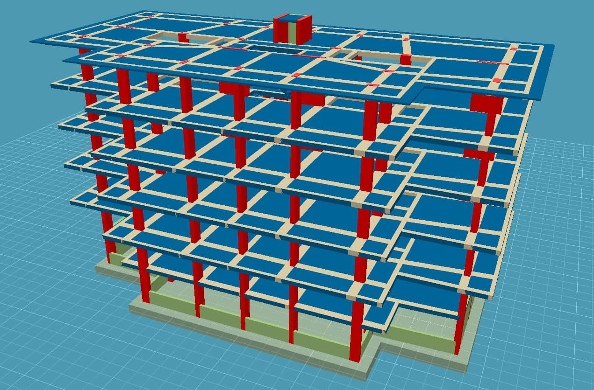
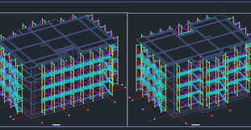

Tezel Mühendislik olarak, modern mühendislik çözümlerini uluslararası standartlarla harmanlayarak yapılarınızın güvenliğini garanti altına alıyoruz. Zemin etüdünden statik projeye kadar her adımda bilimsel verilerle hareket ediyoruz.
Betonarme ve çelik yapıların statik hesaplarını sıfır hata prensibiyle hazırlıyoruz.
Yapı zeminini bilimsel yöntemlerle analiz ederek en uygun temel sistemini kuruyoruz.
Şantiye aşamasında projenin standartlara uygunluğunu titizlikle denetliyoruz.
Mevcut yapıların deprem riskini ölçüyor ve güçlendirme projeleri geliştiriyoruz.

Deprem yönetmeliğine tam uyumlu, radye temel üzerine kurgulanmış betonarme taşıyıcı sistem projesi.

Geniş açıklıklı fabrika binası için tasarlanmış, yüksek mukavemetli çelik konstrüksiyon çözümü.